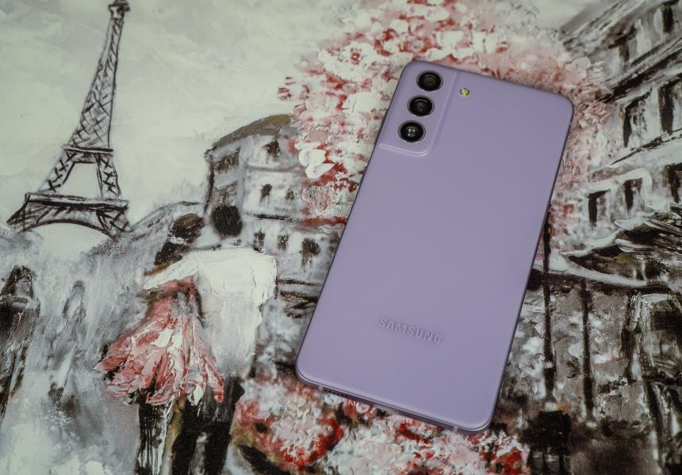

Внешний вид
Внешне Galaxy S21 FE почти один в один напоминает “обычный” Galaxy S21, но с мелкими отличиями. Например, есть блестящая окантовка камер, а надпись “Samsung” как бы трёхмерная.Внешне Galaxy S21 FE почти один в один напоминает “обычный” Galaxy S21, но с мелкими отличиями. Например, есть блестящая окантовка камер, а надпись “Samsung” как бы трёхмерная.Внешне Galaxy S21 FE почти один в один напоминает “обычный” Galaxy S21, но с мелкими отличиями. Например, есть блестящая окантовка камер, а надпись “Samsung” как бы трёхмерная.Внешне Galaxy S21 FE почти один в один напоминает “обычный” Galaxy S21, но с мелкими отличиями. Например, есть блестящая окантовка камер, а надпись “Samsung” как бы трёхмерная.
Samsung Galaxy S21 FE
Samsung Galaxy S21 FE
link link link link link